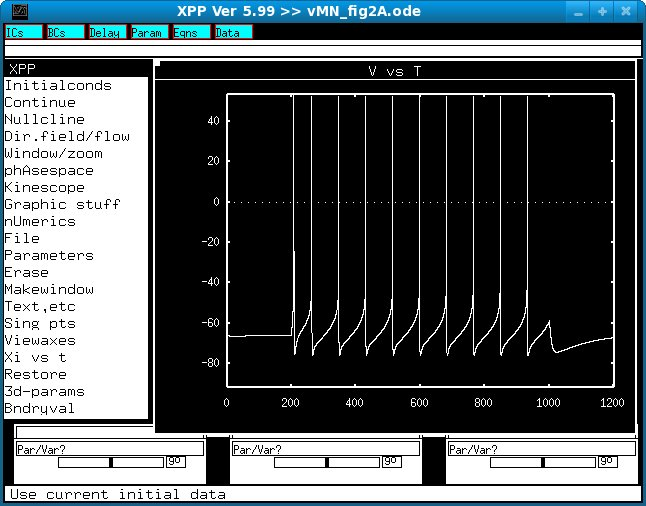

This is the readme for the model associated with the paper: Harish O, Golomb D (2010) Control of the Firing Patterns of Vibrissa Motoneurons by Modulatory and Phasic Synaptic Inputs: a Modeling Study. J Neurophysiol 103:2684-2699 These model files were contributed by the paper authors. Example use: Start (under unix/linux) with a command similar to xppaut vMN_fig2A.ode Select InitialConds - > Go and you should get a screen similar to Fig 2A top: 